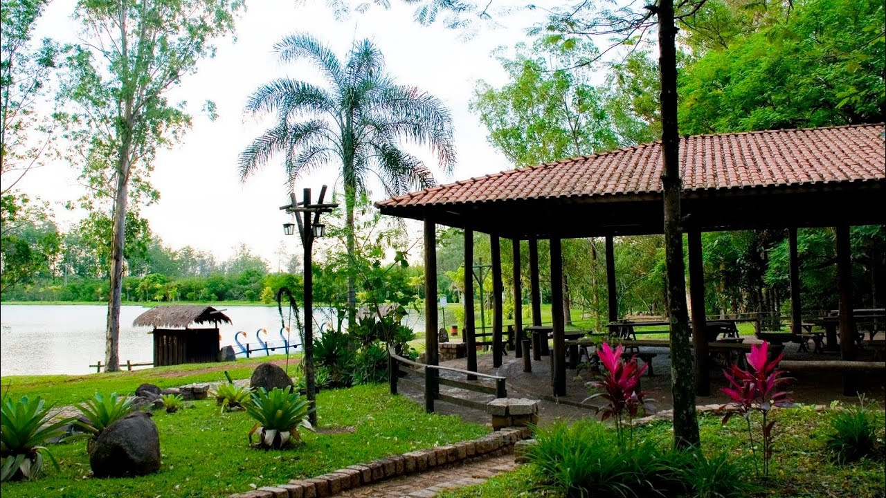
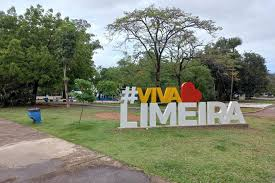
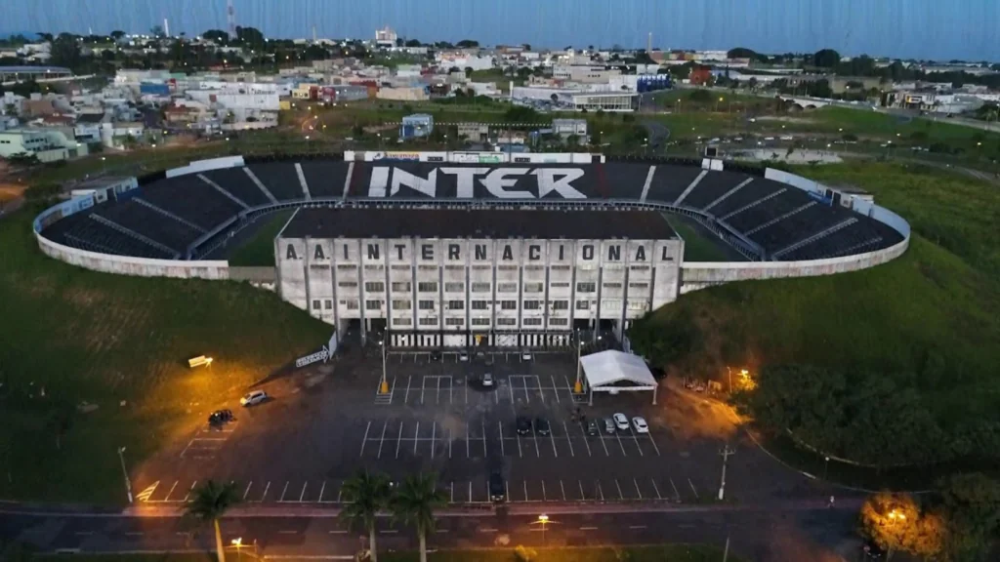
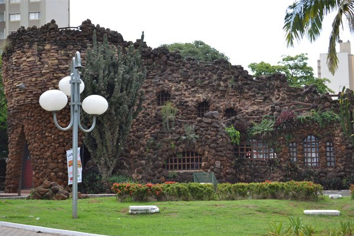
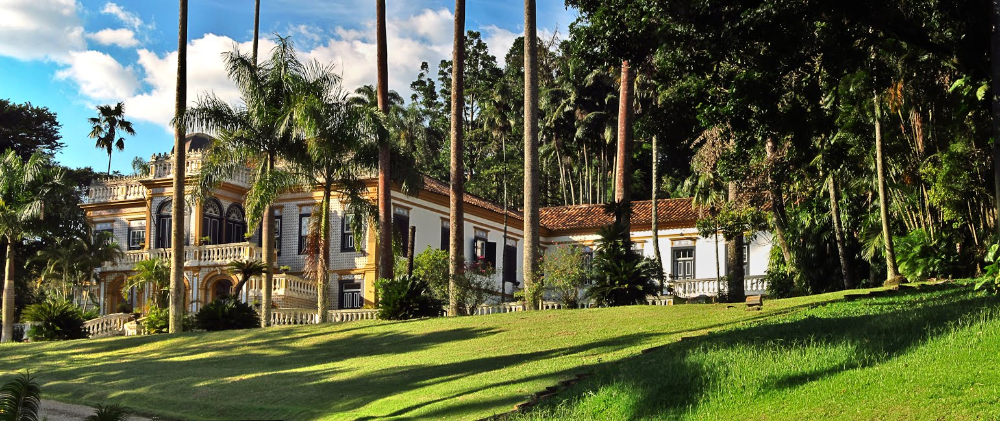
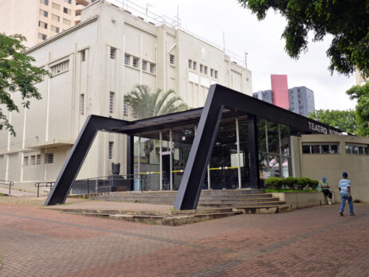

Pontos Turísticos da cidade

Horto Florestal
Um espaço verde para caminhadas e lazer com rica biodiversidade local.

Parque Cidade de Limeira
Amplo parque urbano com trilhas, lago e atividades ao ar livre.

Estádio Major José Levy Sobrinho (Limeirão)
Estádio para jogos de futebol e eventos esportivos.

Gruta da Paz
Um local de oração e reflexão com belas paisagens naturais.

Fazenda Morro Azul
Propriedade histórica que preserva a memória do período cafeeiro.

Teatro Vitória
Espaço histórico e cultural para apresentações teatrais, musicais e eventos.